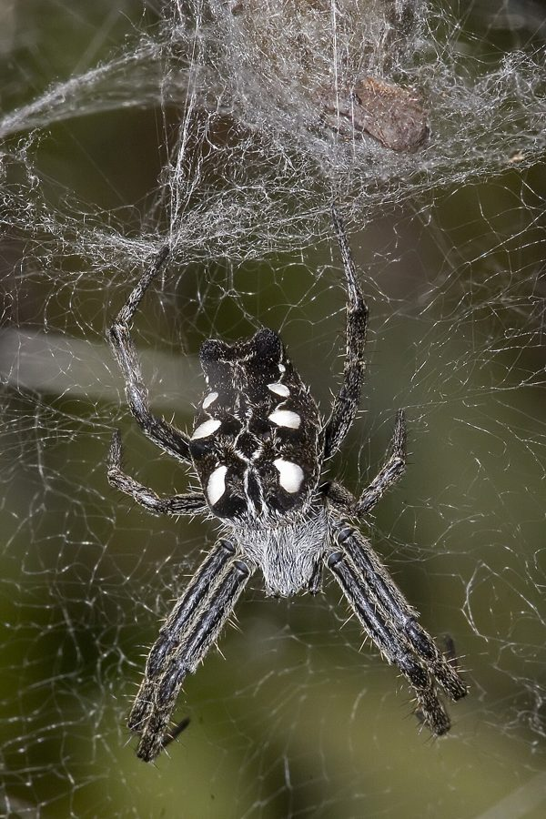

तंबू मकड़ीTropical Tent-web Spider
Cyrtophora citricola · Araneidae · SPD-0009

- Scientific name
- Cyrtophora citricola (Forsskål, 1775)
- Family
- Araneidae
- Hindi
- तंबू मकड़ी
- Status here
- native
- IUCN
- not evaluated
When to look कब देखें
Expected mainly in June, July, August, September, October, November, December.
तंबू मकड़ी / Tropical Tent-web Spider
Cyrtophora citricola (Forsskål, 1775) — Araneidae
तंबू मकड़ी (ट्रॉपिकल टेंट-वेब स्पाइडर) — सूखे बबूल के बाड़ों और नींबू के पेड़ों में रहने वाली एक विशिष्ट गोल-जाला परिवार (orb-weaver) की मकड़ी है। यह एक अत्यंत जटिल, त्रि-आयामी (3D) जाला बुनती है, जो देखने में एक क्षैतिज छाते या तंबू (tent-like dome sheet) जैसा लगता है। इसके जाले में ऊपर और नीचे रेशमी धागों का एक उलझा हुआ जाल (scaffolding) होता है। इसके शरीर का रंग मटमैला भूरा-काला होता है और इसके पेट पर छोटे-छोटे कूबड़ (humps) होते हैं। इस प्रजाति में अत्यधिक लैंगिक विषमता (sexual dimorphism) पाई जाती है; मादा मकड़ी काफी बड़ी (10-15 मिमी) होती है, जबकि नर मकड़ी बहुत छोटा (2-3 मिमी) होता है। कई मादाएं अक्सर अपने जाले एक-दूसरे के करीब बनाती हैं, जिससे एक बड़ा संयुक्त जाला (compound web colony) बन जाता है। यह फसलों के हानिकारक कीटों को नियंत्रित करने में सहायक है।
Quick Identification त्वरित पहचान
| Feature | Description |
|---|---|
| Form | Stout, humped body; abdomen has a series of pairs of prominent tubercles (humps) on the back |
| Colour | Highly variable; ground colour ranges from grey, dark brown, to almost black, with white or yellowish spots |
| Female Size | Medium-sized; body length 10.0–15.0 mm |
| Male Size | Tiny; body length 2.5–3.5 mm (often goes unnoticed at the edge of the female's web) |
| Web Structure | A horizontal, dense mesh sheet (dome) suspended by an irregular vertical scaffolding of silk lines above and below |
| Colony | Semi-social behavior; multiple females build individual webs within a shared framework of support silk |
Field tip: Scan thorny Babool hedges ([FLR-0047 Babool]) or citrus trees in dry weather. Look for horizontal, dome-shaped webs that look like dusty silk sheets with a dense, fine mesh. The owner is a grey-brown humped spider hanging upside-down in the center of the dome.
Morphology आकारिकी
Biometrics (typical measurements for adult specimens in dry scrublands of Basti):
| Measurement | Range |
|---|---|
| Body length (female) | 10.0–15.0 mm |
| Body length (male) | 2.5–3.5 mm |
| Leg span (female) | 25–35 mm |
Abdomen: The female's abdomen is oblong, highly structured, and carries three pairs of prominent dorsal humps (tubercles) and a pair of posterior humps. The coloration is highly cryptic, blending with dry twigs and leaves. The male's abdomen is small, simple, and lacks prominent humps.
Cephalothorax: Flat and broad, covered in dense, short grey hairs.
Web silk: Unlike most orb-weavers, the silk of Cyrtophora citricola is not sticky. The mesh of the dome is so fine (less than 1–2 mm spacing) that insects get their legs caught mechanically in the mesh when they fly into the vertical scaffolding lines and fall onto the sheet.
Behaviour & Ecology व्यवहार और पारिस्थितिकी
Semi-social tent-weaver.
- Web mechanics: Flying insects collide with the irregular vertical threads (scaffolding) above the dome, lose control, and fall onto the horizontal mesh sheet. The spider, hanging upside down beneath the sheet, pulls the insect through the mesh from below.
- Semi-social colonies: While each female guards her own dome-web and kills intruders, multiple females often build their webs connected to each other's support threads, forming colonies of 10 to 100+ webs. This sharing of support threads reduces silk energy costs and increases prey capture rates.
- Crypsis and debris use: The spider often hangs dead leaves, insect husks, and egg sacs in a vertical line in the center of the web. It sits in this line of debris, blending in perfectly to avoid birds.
Ecological Role पारिस्थितिक भूमिका
Canopy pest controller. Cyrtophora citricola is a major predator of flying insects in orchard canopies. Its dry-hedgerow preference makes it the primary predator of citrus psylla, fruit flies, moths, and agricultural beetles in dry seasons. The non-sticky silk lasts for weeks, allowing it to function continuously even during dusty wind storms.
Life Cycle / Phenology जीवन चक्र
- Active season: Active and breeding during the monsoon and post-monsoon months (July–December).
- Reproduction: The tiny male approaches the female on the web. Because of the size difference, he must move carefully to avoid being eaten, mating at the edge of the dome.
- Egg sacs: The female spins up to 4 to 10 green-tinted, disc-shaped, flat silk egg sacs, containing 100–150 eggs each. She strings these sacs vertically above her retreat in the center of the web, guarding them.
- Hatching: Young hatch in 15–22 days, remaining near the maternal web for a few days before dispersing.
Host Plants or Prey आहार
Insectivorous diet (mesh-web trapping):
- Flying pests: Fruit flies, moths, leafhoppers, flying termites (
[SFL-0001 Deemak]), and beetles. - Mosquitoes: Adult mosquitoes resting or flying through hedges.
Predators / Natural Enemies शत्रु
- Birds: Shrikes (
[BRD-0037 Long-tailed Shrike]) and Babblers ([BRD-0035 Jungle Babbler]) regularly search thorny hedges to hunt these spiders. - Parasitic wasps: Small wasps lay eggs inside the green egg sacs, their larvae consuming the spider eggs.
- Araneophagous spiders: Jumping spiders and huntsman spiders invade the colonies to hunt the resident females.
Agricultural / Human Relevance कृषि प्रासंगिकता
Citrus and orchard ally. Highly beneficial in lemon, orange, and mango orchards. The massive compound webs catch thousands of flying pests weekly, providing free pest suppression. The spiders do not harm the plants, and they are completely harmless to humans. Their bites are rare and have no toxic effect on mammals.
Expected Locally स्थानीय रूप से अपेक्षित
Not a field record. Written from published accounts for eastern Uttar Pradesh. No confirmed local sighting yet — if you have seen it, that is what the atlas needs.
अभी तक स्थानीय पुष्टि नहीं। यह विवरण प्रकाशित स्रोतों से है, किसी अवलोकन से नहीं।
Commonly found in dry Babool hedges ([FLR-0047 Babool]) and neglected lemon gardens in Harraiya and Vikramjot blocks of Basti district. The webs are highly visible along dusty village paths, often covered in blowing dirt, looking like grey felt cones.
Distribution वितरण
Global range: Widespread across the Mediterranean, Africa, the Middle East, South Asia (India, Pakistan, Bangladesh), and Southeast Asia. (Introduced populations exist in Florida and the Caribbean).
In India: Widespread in all warm, dry, and semi-arid plains.
In Uttar Pradesh: Abundant in plain districts, particularly in dry hedgerows and scrub margins.
In Basti district / eastern UP: Common resident in all rural block orchards and dry hedges.
Research Questions शोध प्रश्न
- How does the prey capture rate of Cyrtophora citricola change when nesting in colonies versus solitary webs in Basti's orchards? / बस्ती के बागों में अकेले जाला बनाने की तुलना में कॉलोनियों में रहने पर तंबू मकड़ी की शिकार दर में क्या अंतर आता है?
- What is the preference of Cyrtophora citricola for nesting in native Babool (
[FLR-0047]) versus invasive Subabul ([FLR-0045]) hedges? / यह मकड़ी देशी बबूल बनाम विदेशी सुबबूल के बाड़ों में जाला बनाने में किसे प्राथमिकता देती है? - Does the non-sticky nature of Cyrtophora citricola silk prevent dust from reducing the web's structural efficiency along dry dirt roads?
- How do the tiny males of Cyrtophora citricola avoid female aggression during mating within high-density colonies?
- Can children count the number of green egg sacs in a line in a single tent-web to estimate the female's reproductive output? — A simple maternal investment tracking activity.
Similar Species मिलती-जुलती प्रजातियाँ
| Species | Key Difference |
|---|---|
Araneus mitificus (Kidney Garden Spider [SPD-0007]) | Much smaller; builds a flat, vertical orb-web with a missing sector; body is green-yellow with a kidney-shaped rear spot. |
Argiope anasuja (Signature Spider [SPD-0001]) | Sits at the center of a flat, vertical orb-web with a white X-shaped decoration; body is brightly colored yellow and black. |
Nephila pilipes (Giant Wood Spider [SPD-0002]) | Extremely large; builds huge, golden, vertical orb-webs in shaded forests; body is long, black, and yellow. |
Taxonomy & Classification वर्गीकरण
Original description. Peter Forsskål described the Tropical Tent-web Spider as Aranea citricola in 1775 in Descriptiones animalium, avium, amphibiorum, piscium, insectorum, vermium; quae in itinere orientali observavit (p. 86). The type locality was Cairo, Egypt. It was later placed in the genus Cyrtophora Simon, 1864. The authority is written in parentheses as (Forsskål, 1775). The specific name citricola refers to its habit of nesting in citrus trees (citrus = lemon/orange, cola = dweller in Latin).
Subspecies. Monotypic — no subspecies are currently recognised.
Family and order placement. Placed in the order Araneae, suborder Araneomorphae, family Araneidae.
Phylogenetic notes. The genus Cyrtophora represents a specialized clade of orb-weavers (Araneidae) that have transitioned from building sticky, two-dimensional orb-webs to non-sticky, three-dimensional mesh webs, representing a significant divergence in web-spinning evolution.
IUCN status rationale. Not evaluated (NE) by the IUCN Red List. It is a highly abundant, adaptable, and widely distributed species facing no conservation threats.
Photo Gallery फोटो गैलरी
References संदर्भ
- Forsskål, P. (1775). Descriptiones animalium, avium, amphibiorum, piscium, insectorum, vermium; quae in itinere orientali observavit. Möller, Hauniae, p. 86. [original description]
- Pocock, R. I. (1900). The Fauna of British India, including Ceylon and Burma. Arachnida. Taylor & Francis, London.
- Tikader, B. K. (1982). The Fauna of India. Spiders: Araneae (Araneidae and Gnaphosidae). Vol. 2. Zoological Survey of India, Calcutta.
- Blanke, R. (1972). Social behavior and web building of Cyrtophora citricola (Araneae: Araneidae). Zeitschrift für Tierpsychologie, 30, 225–248.
- Zoological Survey of India. State Fauna Series: Fauna of Uttar Pradesh — Araneae. ZSI, Kolkata.
- GBIF Occurrence Data — Cyrtophora citricola (2026). GBIF taxon key: 5171231.
Source file: species/fauna/spiders/tropical_tent_web_spider.md